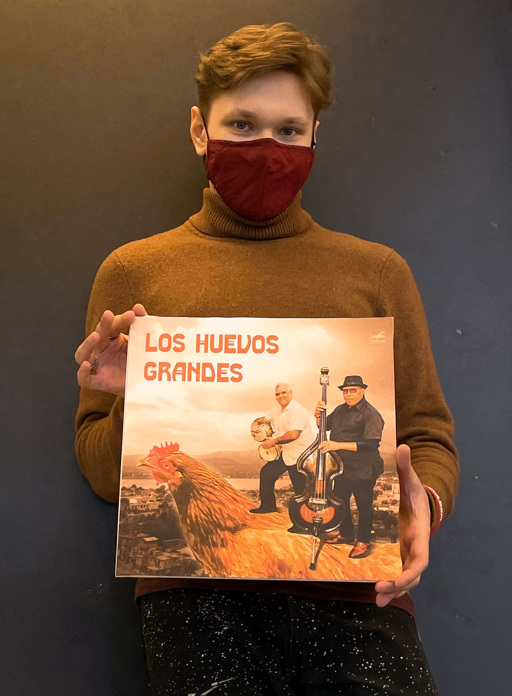

My name is Yarik Antipin,
and I'm
a graphic designer.
I revel
in
creating things,
that truly stick out like
a sore thumb,
while working with content
from a wide
variety of mediums
and professional spheres.
I could state that I make
web, print
and video projects
and it would be
the truth.
However, graphic design isn't
limited
to just a few technical
skills.
Hence, a far larger
versatility
is possible in this
field of work.
That's why, I am
constantly gaining
new hard
skills and am always
open
to learning.
